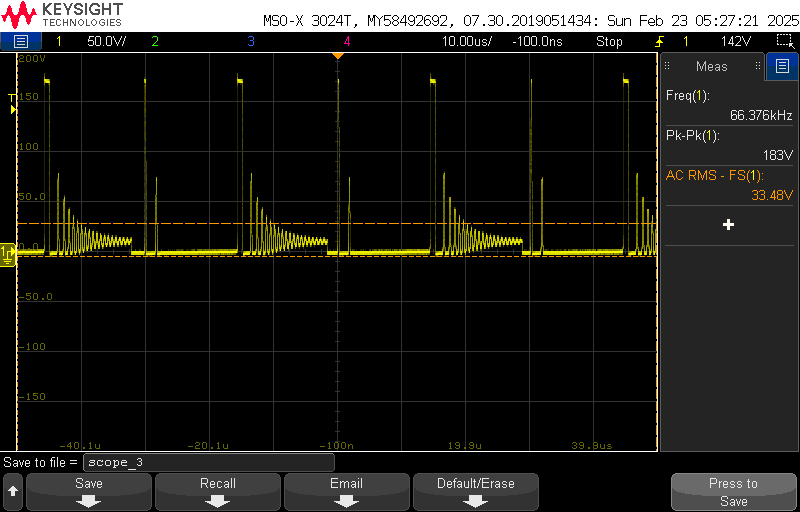
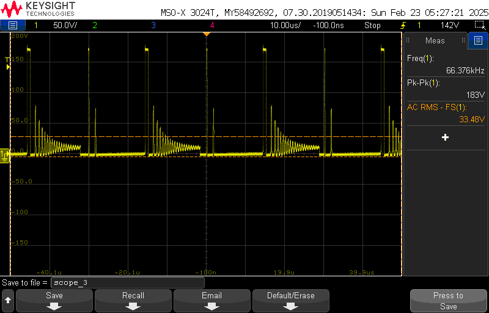

Nixie Tube Clock
I wanted to use Nixie tubes for a while now and decided to start simple by building a clock using them. I've documented issues I faced and hope this helps anyone interested in using Nixie tubes, building a similar project, or just learning something new!
Features
My idea for the Nixie tube clock was to include the following features:
- Power off of 12V DC adaptor
- Advance minutes
- Advance hours
- Fast advance minutes
- Fast advance seconds
- Optional expansion for seconds display
Nixie Tubes
I was able to obtain a set of 4 IN-12B Nixie tubes through Ebay, but there are a few different types available. Specifically for the IN-12's, each Nixie tube has 12 pins. 1 no-connect can be ignored, 1 common anode, and 10 cathodes for each of the digits 0-9. Current should be limited to 2-3.5mA and a minimum "strike/lighting" voltage of 170V DC is required. After turning on, the operating voltage drops to ~150V. With a 20V difference between supply and anode and operating current of 2-3.5mA, a 10k-15k current limiting resistor should be fine, but I chose a value of 20k for a slightly dimmer light. Varying the supply voltage of the switchig regulator is the easiest way I can think of to vary the brightness.
The K155ID1 Nixie drivers can be used, but I chose to drive them with a 4017 decade counter instead. Since these low voltage logic counters can't directly switch I used high C-E voltage BJTs (MPSA42) as switches. With 5V logic and 3.5mA of C-E current, a base resistor of 10k is sufficient. Each BJT's emitter is tied to ground, the collector is tied to the corresponding cathode of the Nixie tube, and the tube's anode is tied to the 170V DC supply through the current-limiting resistor.
For the 170V DC supply, a switching regulator needs to be used to step up the 12V supply. For longer term use, I chose a pre-built module with a higher efficiency than one I could design myself. My goal for later is to design the switching regulator myself, and the UC3845AN, the PWM controller used on the module, would be a good basis for that design. Another idea might be directly rectifying the ac line.
Clock Logic
I decided to use 4017 10-bit decade counters as the basis for the clock logic. Every high to low transition of a clock input signal turns on the next consecutive output (0-9 available) each of which is connected to the corresponding cathode of a Nixie tube. After counting up to output 9, the counter resets the count back to 0.

- For the first seconds digit counter (00:00:0X), the 1 Hz reference clock signal is fed into the clock input. All 10 outputs can be connected to a tube, but I omitted this.
- For the second seconds digit (00:00:0X), the carry output of the first counter is fed into the clock input, which goes high after all 10 outputs have been counted through. Output 6 is tied back to the master reset of this same counter, resetting the count back to 0 after the 60 seconds of a minute. I also did not connect these outputs to a tube.
- For the first minutes digit (00:0X:00), output 6 of the previous counter is also connected to the clock input. All 10 outputs are used and connected to a tube.
- For the second minutes digit (00:X0:00), the carry output of the previous counter is fed into the clock input. Output 6 is tied back to the master reset of this same counter, resetting the count back to 0 after the 60 minutes of an hour. These 6 outputs were connected to a tube.
- For the first hours digit (0X:00:00), output 6 of the previous counter is connected to the clock input. All 10 outputs are used and connected to a tube as a 24 hour clock.
- For the second hours digit, the carry output of the previous counter is connected to the clock input. Output 2 of this counter and output 4 of the previous hours digit counter are connected to an AND gate, which resets both hour counters after the count has reached 24 hours.
For the 1 Hz reference clock signal, I used a Pierce crystal oscillator with a 32.768 kHz crystal, a commonly used frequency in RTC applications. To divide 32.768 kHz by 2^15 to obtain 1 Hz as the reference signal, I needed a 15-bit binary counter. I started with the 4060 as pins to an internal inverter amplifier are available. This sinewave is the turned into a square waveform through an inverting Schmitt trigger. If you use an external inverter for the Pierce oscillator, make sure it does not have hysteresis, but the output of the oscillator can then be fed into a Schmitt trigger. Load capacitance should be determined by the crystal's datasheet to ensure resonance at the specified frequency. The 4060 is a 14-bit counter, so the final 2 Hz signal needs to be divided one more time. Unfortunately, the 4060 does not have the divide by 1 output available, so I used a separate 4020 14-bit counter for this purpose. Output A of the 4020 is then the 1 Hz reference signal.
Time Set Controls
For the fast advance controls, I connected Q10 of the 4060 (32768/2^10 = 32 Hz; other outputs can be used for a faster/slower rate) through to each of the clock inputs of the corresponding decade counter (minutes, seconds) through a momentary pushbutton. Diodes were required wherever output contention could occur. For the fine advance minutes and hours controls, I used a 4011 NAND gate SR latch connected to a SPDT momentary switch for proper debouncing of the controls.
5V Voltage
For the 5V supply voltage to supply all the digital IC's, I chose the 7805 linear regulator to step down the 12V supply down to 5V. To keep this regulator from getting too hot from high power consumption, I chose relatively large pullup and pulldown resistor values and attached a small aluminum heatsink, but in the end, the switching regulator ended up being the hottest component with the linear regulator staying relatively cool. Even with the 7V drop across the 7805, the current draw was never more than a few mA, resulting in a power dissipation of a few mW at most.
Issues and Revisions
One issue I found with the diode AND gate for resetting both 4017's for the hours control was that the AND gate output pulse would only go up to ~2.5V (assumedly the logic threshold voltage to reset the 4017, which is fine), but only one of the 4017's would reset, likely due to slight variations in threshold voltage and parasitics in the wiring. To fix this, I implemented a monostable multivibrator to fix the output pulse duration to at least the minimum reset pulse width of 260 ns. My pulse duration was around 32 us with the components I had. Timing wasn't critical with the controls in the magnitude of hours.
I also found some wire crosstalk happening with the time set controls. Advancing the minutes would sometimes advance the hours. This was likely from the wires for these controls being pressed against the Nixie tube wires and high switching voltages inducing electric fields whenever the Nixie tubes change digits. Separating these wires resolved this issue. This should also be kept in mind if laying out these traces on a PCB.
Enclosure
I found a decent off the shelf ABS plastic enclosure to house the electronics in. Soldering the hardware onto a perfboard was the longest part of this process and I would recommend making a PCB instead. Spring-cage terminal blocks were pretty nice for connecting the Nixie wires to the board. I also used a 2x5.5mm barrel jack connector for the 12V input, connected to a standard wall adaptor at the back of the enclosure. I hand-drilled most of the holes for the Nixie tubes, switches, and power connector, and I also left terminal blocks and space for 2 more seconds-indicator Nixie tubes in case I wanted to add them later. After running the clock for around 2 days, the time was still accurate and interior temperature reached only up to max temperature of 90 degrees Fahrenheit near the switching regulator with the rest staying around a cool 70 degrees (without any ventilation holes for the enclosure). The crystal's accuracy can be affected by temperature if not temperature-controlled along with a few other factors, so keeping the oscillator far from the switching regulator might be a good consideration. I added a few images of the enclosure and a time-lapse of the fast advance controls down below.

Boost Converter
I also wanted to try designing a 12V to 180V boost converter for the Nixie tubes. I chose the monolithic MC34063 switching converter IC with an external switching network for higher currents, max current limiting of ~2.5A, and designed for a current output of ~ 50mA at 180VDC. The Nixie tubes draw 2-3mA each, so for 6 digits, the current draw would be around 18mA max. With my current setup (4 digits), current draw would be closer to 12mA. With the current biasing network, the output voltage comes out to be 175V. Power efficiency was determined as 74.199% with a 12mA load and 73.946% at a 20mA load. Schematic and layouts were made in Altium and the PCB was manufactured by JLCPCB. There were only a few components, so the PCB was hand-soldered.


AC output voltage and ringing at the switching node were measured. A snubber should be added to this node to potentially reduce losses and EMI.

 

Useful Datasheets and References
- IN-12B Datasheet: IN-12B
- IN-12B Datasheet (Translated): IN-12B_translated
- 4017 Decade Counter Datasheet: CD74HC4017E
- 4060 14-bit Counter Datasheet: CD4060B
- Pierce Oscillator Info: Wikipedia
- Pierce Oscillator Good Application Notes: Pierce-Gate XO
- Pierce Oscillator For MCUs: ST Application Notes
- 4020 14-bit Counter Datasheet: CD4020B
- UC3845 PWM Controller: UC3845A
- Switch Debounce Info: DigiKey
- Switch Debounce Simulation: Falstad
- Nixie Clock Schematic: NixieClockSch.pdf
- Boost Converter Schematic: NixieBoostConvSch.pdf